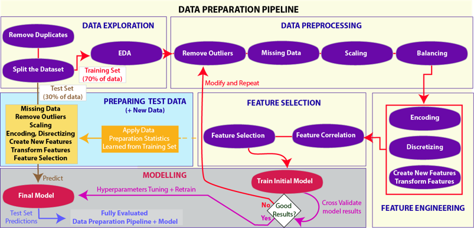
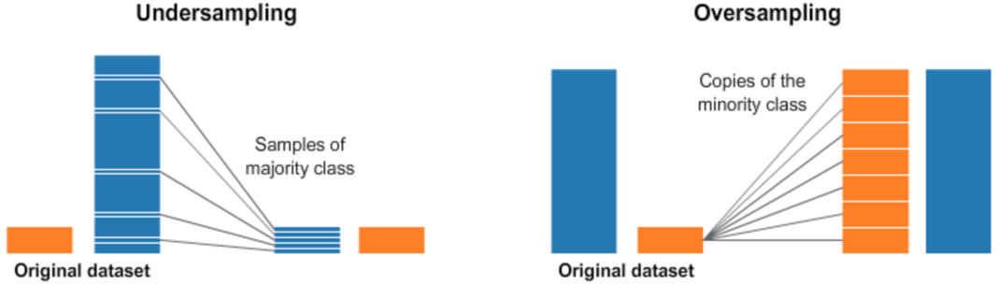
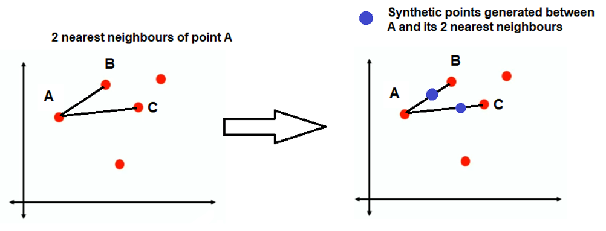
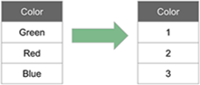
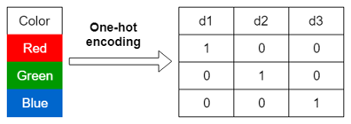
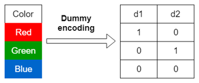

Data Preparation#
import numpy as np
import pandas as pd
import matplotlib.pyplot as plt
from sklearn.model_selection import train_test_split
from sklearn.impute import SimpleImputer
from sklearn.preprocessing import OneHotEncoder
Data preparation pipeline#

Data exploration#
Data exploration มีขั้นตอนดังนี้
Importing data#
data = pd.read_csv("../data/India_air_quality.csv")
data
| stn_code | state | location | type | so2 | no2 | rspm | spm | pm2_5 | date | rainfall | |
|---|---|---|---|---|---|---|---|---|---|---|---|
| 0 | NaN | Andhra Pradesh | Hyderabad | Others | 5.1 | 14.2 | 50.00 | 128.0 | NaN | 29/02/2008 | NaN |
| 1 | 229 | Odisha | Rayagada | Industrial | 2.0 | 14.5 | 36.00 | 54.0 | NaN | 08/04/2010 | 53.897548 |
| 2 | 631 | Goa | Honda | Residential | 5.0 | 11.0 | 42.00 | 19.0 | NaN | 10/11/2013 | NaN |
| 3 | 674 | Karnataka | Davangere | Residential | 6.0 | 9.0 | 302.00 | NaN | NaN | 02/01/2015 | 95.685937 |
| 4 | NaN | West Bengal | Kolkata | Industrial | 7.4 | 69.5 | 77.00 | 164.0 | NaN | 20/08/2007 | 83.049383 |
| ... | ... | ... | ... | ... | ... | ... | ... | ... | ... | ... | ... |
| 310026 | 376 | Rajasthan | Jodhpur | Residential | 5.0 | 21.0 | 244.00 | NaN | NaN | 16/12/2011 | 87.461929 |
| 310027 | 421 | Punjab | Naya Nangal | Residential | 7.0 | 16.0 | 78.67 | NaN | NaN | 05/05/2012 | NaN |
| 310028 | 17 | Rajasthan | Kota | Industrial | 9.0 | 49.0 | 111.00 | NaN | NaN | 21/02/2011 | NaN |
| 310029 | NaN | Maharashtra | Nagpur | Others | 10.0 | 25.3 | 125.00 | 198.0 | NaN | 02/09/2007 | 87.865203 |
| 310030 | 565 | Himachal Pradesh | Nalagarh | Residential | 2.0 | 21.0 | 103.00 | NaN | NaN | 07/11/2014 | 97.752689 |
310031 rows × 11 columns
Dropping duplicates#
เอาข้อมูลที่ซ้ำกันออกให้เหลือข้อมูลเดียวก่อนทำ spliting (แบ่ง dataset ออกเป็น training set กับ test set) เพื่อไม่ให้มีข้อมูลใน training set ไปอยู่ใน test set
# Check the number of duplicates
data.duplicated().sum()
400
# Remove duplicates
data = data.drop_duplicates()
Splitting data#
มักจะแบ่ง dataset ออกเป็น training set (70%) กับ test set (30%)
test set ต้องมีมากพอเพื่อที่จะใช้ represent model performance
หากมีข้อมูลน้อยไป ต้องเพิ่มปริมาณข้อมูล
เราสามารถลดสัดส่วนของ test set ได้ถ้ามีข้อมูลมาก
scikit-learnมีหลาย method ที่ใช้แบ่งข้อมูล แต่ในที่นี้เราจะใช้sklearn.model_selection.train_test_split
# แยก features (X) กับ target (y) ออกจากกัน
y = data['rspm']
X = data.drop(columns="rspm")
# Split the dataset
# train_size=0.7 => training dataset = 70% (test set = 30%)
# test_size=0.3 => test set = 30% (training dataset = 70%)
X_train, X_test, y_train, y_test = train_test_split(X, y, train_size=0.7, random_state=42)
sklearn.model_selection.train_test_split จะ split ข้อมูลอย่างสุ่ม หากต้องการให้ผลลัพธ์เหมือนเดิม ให้ใช้ random_state=42
Exploratory Data Analysis (EDA)#
เป็นการดู statistics ของ training set เพื่อทำความเข้าใจข้อมูล (ห้ามทำกับ test set)
# Check the data type
X_train.dtypes
stn_code object
state object
location object
type object
so2 float64
no2 float64
spm float64
pm2_5 float64
date object
rainfall float64
dtype: object
# Find the statistics on the numerical values
X_train.describe()
| so2 | no2 | spm | pm2_5 | rainfall | |
|---|---|---|---|---|---|
| count | 202025.000000 | 216741.000000 | 90875.000000 | 4583.000000 | 188881.000000 |
| mean | 11.133270 | 26.389450 | 217.544524 | 40.501726 | 79.911407 |
| std | 11.093978 | 17.986456 | 147.514219 | 30.202104 | 20.036673 |
| min | 0.000000 | -66.400000 | 0.000000 | 4.000000 | -24.682525 |
| 25% | 5.000000 | 14.400000 | 110.333333 | 24.000000 | 66.362289 |
| 50% | 8.200000 | 23.000000 | 184.000000 | 32.000000 | 79.861002 |
| 75% | 14.000000 | 33.000000 | 289.000000 | 46.000000 | 93.447692 |
| max | 909.000000 | 876.000000 | 2610.000000 | 395.000000 | 166.455104 |
# Count different locations
X_train["location"].value_counts()
location
Nagpur 6060
Navi Mumbai 5037
Guwahati 4784
Nashik 4485
Pune 4354
...
Bhuj 9
Nizamabad 8
Sarigam 7
Khajuraho 7
Gangtok 1
Name: count, Length: 287, dtype: int64
# Plot a histogram for numerical features
hist = X_train.hist(bins=50, figsize=(10, 10));
num_cols = X_train.select_dtypes(include=np.number).columns # numerical columns
cat_cols = X_train.select_dtypes(exclude=np.number).columns # categorical columns
# Correlation matrix
corr = X_train[num_cols].corr()
corr
| so2 | no2 | spm | pm2_5 | rainfall | |
|---|---|---|---|---|---|
| so2 | 1.000000 | 0.342506 | 0.111831 | 0.030533 | -0.001289 |
| no2 | 0.342506 | 1.000000 | 0.341463 | 0.492185 | -0.000142 |
| spm | 0.111831 | 0.341463 | 1.000000 | NaN | -0.008428 |
| pm2_5 | 0.030533 | 0.492185 | NaN | 1.000000 | -0.027691 |
| rainfall | -0.001289 | -0.000142 | -0.008428 | -0.027691 | 1.000000 |
Data pre-processing#
Dropping outliers/non-sense values#
เอา outlier หรือ non-sense values ออก หรือแปลงเป็นค่า missing value (เช่น NaN, large negative (e.g., -999), ?, inf) แล้วเอาออกทีหลังก็ได้
# จาก EDA จะเห็นว่ามีบางค่าใน "no2" กับ "rainfall" column ที่เป็นลบ (non-sense)
# Create boxplots
X_train[['no2']].boxplot(figsize=(3, 3));
X_train[['rainfall']].boxplot(figsize=(3, 3));
# Drop row containing non-sense values
X_train = X_train.drop(X_train[(X_train['no2'] < 0) | (X_train['rainfall'] < 0)].index)
y_train = y_train[X_train.index]
Handling missing values#
จัดการกับ missing values หรือจะเก็บไว้ก็ได้ถ้ามีความหมาย
ถ้าใน feature หนึ่งมีสัดส่วนของ missing value มากกว่า 30% ควรเอา column นั้นออก หรือเอาแถวที่มี missing value ใน column นั้นออก
ถ้าใน feature หนึ่งมีสัดส่วนของ missing value น้อยกว่า 30% ควร impute (แทนที่) missing value ด้วย mean/median/mode
ใช้
sklearn.impute.SimpleImputerNumerical data ที่ discrete หรือมีค่าที่ซ้ำเยอะเป็นพิเศษ ควรใช้ mode
Categorical data บางอย่างไม่ควรถูกแทนด้วย mode แต่สามารถแทนด้วย
"not known"หรืออะไรทำนองนี้ได้ เช่น สถานที่ หรือข้อมูลที่ไม่มี mode ที่โดดเด่น
# Find NaN percentage of each feature
nan_percentages = X_train.isnull().sum() / len(X_train) * 100
nan_percentages
stn_code 34.168151
state 0.000000
location 0.000000
type 0.047062
so2 6.789890
no2 0.000000
spm 58.072568
pm2_5 97.885888
date 0.001384
rainfall 12.854467
dtype: float64
# Drop features with missing values >30%
features_to_be_removed = nan_percentages[nan_percentages > 30].index
X_train = X_train.drop(columns=features_to_be_removed)
# Update
num_cols = X_train.select_dtypes(include=np.number).columns # numerical columns
cat_cols = X_train.select_dtypes(exclude=np.number).columns # categorical columns
# Check the number of each category in the "type" feature
X_train["type"].value_counts()
type
Residential 91348
Industrial 72152
Others 45689
Sensitive 7443
Name: count, dtype: int64
# Replace NaN with the most generic type
X_train["type"].replace(np.nan, "Others", inplace=True)
# Instantiate a SimpleImputer object with strategy of choice
num_imputer = SimpleImputer(strategy="mean")
# Call the "fit" method on the object to compute the strategy for numerical features
# and store the strategy values as an attribute
num_imputer.fit(X_train[num_cols])
SimpleImputer()In a Jupyter environment, please rerun this cell to show the HTML representation or trust the notebook.
On GitHub, the HTML representation is unable to render, please try loading this page with nbviewer.org.
SimpleImputer()
# Call the "transform" method on the object to identify missing values
# and replace them with previously calculated strategy values
X_train[num_cols] = num_imputer.transform(X_train[num_cols])
num_imputer.statistics_ # Strategy values
array([11.13318779, 26.39035904, 79.91341849])
เราสามารถรวม
num_imputer.fit(X_train[num_cols])
X_train[num_cols] = num_imputer.transform(X_train[num_cols])
ได้เป็น
X_train[num_cols] = num_imputer.fit_transform(X_train[num_cols])
# Replace missing values in categorical features with the most frequent values
cat_imputer = SimpleImputer(strategy="most_frequent")
X_train[cat_cols] = cat_imputer.fit_transform(X_train[cat_cols])
Feature scaling#
เป็นการแปลงข้อมูลจากหลาย ๆ แหล่งให้อยู่ใน scale เดียวกัน แต่ไม่ต้อง scale target (y)
มี 3 วิธีที่นิยม ได้แก่
Standardising#
ใช้
sklearn.preprocessing.StandardScalerใช้ได้ดีที่สุดเมื่อข้อมูลกระจายตัวแบบ normal distribution
ข้อมูลแต่ละแหล่งอาจมี range ไม่เท่ากันหลังจากถูก scaled
อ่อนไหวต่อ outlier
Distort relative distances between feature values
Robust scaling#
ใช้
sklearn.preprocessing.RobustScalerเหมือน standardizing แค่ไม่อ่อนไหวต่อ outlier เท่า
ใช้ได้เมื่อข้อมูลไม่กระจายตัวแบบ normal distribution หรือกระจายตัวแบบ normal distribution แต่มี outlier
Normalising#
ใช้
sklearn.preprocessing.MinMaxScalerมีช่วงของข้อมูลหลังถูก scaled แน่นอน (0-1)
ใช้ได้ดีไม่ว่าข้อมูลมีการกระจายตัวแบบใด
ไม่ลดผลจาก outlier
ไม่ลดความเบ้ (skewness) ของการกระจายตัวของข้อมูล
Balancing datasets#
ในการทำ classification task หากข้อมูล imbalanced จะทำให้ model ทำนาย class ที่มีข้อมูลน้อยกว่าได้แย่กว่า
สำหรับ binary classification task ถ้าสัดส่วนของข้อมูล class 1 : class 2 น้อยกว่า 30:70 จะถือว่า imbalanced
เพื่อทำให้ข้อมูล balanced เราจะทำสิ่งที่เรียกว่า balancing เราจะทำ balancing เฉพาะกับ training set เท่านั้น
Oversampling and undersampling#
เราสามารถทำ balancing ได้ 2 วิธีหลัก
ก็อปปี้ข้อมูลใน class ที่เล็กกว่า (oversampling)
เอาข้อมูลแค่บางส่วนจาก class ที่ใหญ่กว่า (undersampling)

Synthetic Minority Over-sampling TEchnique – SMOTE#
SMOTE เป็นวิธีการ oversampling ที่สร้างข้อมูลใหม่ใน class ที่เล็กกว่าโดยการเอาข้อมูลสองจุดที่ใกล้กันมาทำ linear combination กัน ได้ข้อมูลใหม่ (ไม่ใช่วิธี balancing ที่ดี)

Feature engineering#
Feature engineering is a category of preprocessing that includes encoding, discretizing and creating new features.
Creating / transforming features#
เช่น เอา feature หนึ่งมา take log หรือเอา 2 feature มาหารกัน
Create additional information
Reduce the number of features by combining them
Change data distribution
Potentially improve model performance
X_train[["so2", "no2"]].hist(bins=100, figsize=(8, 3));
# Transform "so2" and "no2" features by taking log (+0.001 to avoid log(0))
X_train["so2"] = np.log(X_train["so2"] + 0.001)
X_train["no2"] = np.log(X_train["no2"] + 0.001)
X_train[["so2", "no2"]].hist(bins=100, figsize=(8, 3));
Discretizing / Binning#
ทำเมื่อต้องการแปลงจาก regression task เป็น classification task
ใช้
pandas.cutเช่น แปลงจากปริมาณฝุ่นเป็นการบอกว่ามีฝุ่นเยอะหรือน้อย
y_train_discretised = pd.cut(x=y_train,
bins=[y_train.min()-1, y_train.mean()-0.25*y_train.std(), y_train.max()+1],
labels=['low', 'high'])
y_train_discretised
67566 low
295410 high
118557 low
227449 low
180266 low
...
119927 high
259456 low
131993 high
146945 low
122007 high
Name: rspm, Length: 216734, dtype: category
Categories (2, object): ['low' < 'high']
Encoding#
แปลง non-numeric data เป็น numeric data ทำได้ 3 วิธี ได้แก่
Target encoding#
ใช้
sklearn.preprocessing.LabelEncoderค่าที่ได้อาจถูกนำไปใช้แบบผิด ๆ เช่น สีน้ำเงิน เป็น 3 เท่าของสีแดง

One-hot encoding#
ใช้
sklearn.preprocessing.OneHotEncoderAll columns are preserved.
Can create colinearity between variables in linear models without regularization.
จัดการ unknown category (category ที่มีใน test set แต่ไม่มีใน training set) โดยใส่
handle_unknown="ignore"เพื่อทำให้ค่าที่เป็น unknown category เป็น 0 ในทุก column

Dummy encoding#
ใช้
sklearn.preprocessing.OneHotEncoderแต่เอาออก 1 category โดยใส่drop=["Others"]No colinearity.
Dimensionality of data is reduced.
Lose some information.

X_train['type'].value_counts()
type
Residential 91348
Industrial 72152
Others 45791
Sensitive 7443
Name: count, dtype: int64
# Instantiate encoder: sparse_output=False => returns a numpy array or dataframe (as opposed to a sparse matrix)
ohe = OneHotEncoder(sparse_output=False)
type_encoded = ohe.fit_transform(X_train[['type']])
type_categories = ohe.categories_[0] # Categories in the "type" feature
type_categories
array(['Industrial', 'Others', 'Residential', 'Sensitive'], dtype=object)
X_train[type_categories] = type_encoded # Add encoded columns
X_train.drop(columns="type", inplace=True) # Drop the "type" column
X_train
| state | location | so2 | no2 | date | rainfall | Industrial | Others | Residential | Sensitive | |
|---|---|---|---|---|---|---|---|---|---|---|
| 67566 | Assam | Guwahati | 1.791926 | 2.565026 | 05/01/2015 | 92.268021 | 0.0 | 0.0 | 1.0 | 0.0 |
| 295410 | Maharashtra | Latur | 1.609638 | 2.772651 | 18/10/2011 | 79.913418 | 0.0 | 0.0 | 1.0 | 0.0 |
| 118557 | Maharashtra | Navi Mumbai | 2.484990 | 3.784212 | 05/10/2011 | 79.913418 | 0.0 | 0.0 | 1.0 | 0.0 |
| 227449 | Tamil Nadu | Madurai | 2.809463 | 3.226884 | 22/05/2006 | 59.468407 | 0.0 | 1.0 | 0.0 | 0.0 |
| 180266 | Karnataka | Hassan | 1.609638 | 2.890427 | 06/08/2012 | 75.121742 | 0.0 | 0.0 | 1.0 | 0.0 |
| ... | ... | ... | ... | ... | ... | ... | ... | ... | ... | ... |
| 119927 | Uttar Pradesh | Jhansi | 2.174865 | 3.349939 | 27/03/2009 | 85.948820 | 0.0 | 1.0 | 0.0 | 0.0 |
| 259456 | West Bengal | Durgapur | 2.410020 | 3.786482 | 06/08/2004 | 91.441883 | 1.0 | 0.0 | 0.0 | 0.0 |
| 131993 | Andhra Pradesh | Hyderabad | 1.609638 | 3.091088 | 23/02/2012 | 108.806373 | 0.0 | 0.0 | 1.0 | 0.0 |
| 146945 | Andhra Pradesh | Guntur | 1.609638 | 2.772651 | 09/12/2013 | 75.351849 | 0.0 | 0.0 | 1.0 | 0.0 |
| 122007 | Gujarat | Vadodara | 2.091988 | 2.791226 | 20/10/2006 | 76.943539 | 0.0 | 1.0 | 0.0 | 0.0 |
216734 rows × 10 columns